You can modify objects in many ways as you create your artwork – including quickly and precisely controlling their size, shape, and orientation. In this lesson, you'll explore the various transform tools, commands, and palettes as you create three pieces of artwork.
In this tutorial, you'll learn how to do the following:
Select, scale, move, rotate, and shear individual objects and objects in a group.
Rotate objects using default rotation centers and centers that you have moved.
Use the Transform palette to modify the shape of an object with precision.
Work with snap guides and snap objects to guide lines.
Getting Started
In this lesson, you'll transform parts of a logo to use in three pieces of artwork to create a letterhead design,
an envelope, and a business card template.
Start Inkscape.
Choose File > Open, and open the Composite.svg file in the Lesson07 folder.
This file contains a composite of the three pieces of finished artwork. The Citrus Bath & Soap logo
in the top left corner of the letterhead is the basis for all the modified objects. The logo has been
resized for the letterhead, envelope, and business card.
If you like, use the Zoom tool () to reduce the view of the finished artwork, adjust the window size, and leave it on your screen
as you work. (Use the mouse wheel with and without pressing the <Shift> key to move the artwork where
you want it in the window.) If you don't want to leave the image open, choose File > Close.
To begin working, you'll open an existing file set up for the letterhead artwork.
Choose File > Open, and open the Tutorial08StartLetterhd.svg file
in the Tutorial07 folder. This start file has been saved with the rulers showing
in inches, custom swatches added to the Swatches palette, and blue guidelines for
scaling the logo and objects on the letterhead.
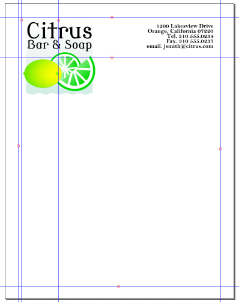
Choose File > Save As, name the file Letterhead.svg, select the Tutorial07 folder,
and click on Save.
Scaling Objects
You scale objects by enlarging or reducing them horizontally (along the x axis) and vertically
(along the y axis) relative to a fixed point of origin that you designate. If you don't designate
an origin, the objects are scaled from their center points. You'll use three methods to scale the
logo and two objects copied from the logo.
First you'll use the Transform palette to scale down the logo by entering new dimensions and
designating the point of origin from which the logo will scale.
Using the Select tool () in the toolbox, click the logo to select the group of objects (type, background, lemon, orange slice, lime slice) that make up the logo.
Choose Object > Transform to display the Transform palette. The Transform palette appears
docked on the right side of the screen.
The Transform palette contains options for moving, scaling, rotating, skewing, and distorting an object
by manipulating the handles of its bounding box. You can move an object relative to a point of origin
of your choosing or absolute position on the artboard, scale an object keeping or not keeping aspect
ration, and distort an object by editing its matrix or creating a new matrix. For more information than
what is presented in this tutorial, choose Help > Inkscape Manual > Positioning and Transforming
> Transformations.
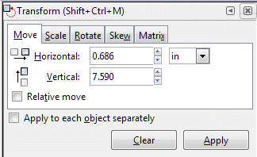
Transform palette.
Click on the Scale tab. Set the unit of measurement to points (pt) if it is
not set to points already. Set the width to 83.75 points and the height to 8.5 points.
Click on the Apply button. The logo is now resized to your measurements. Logo scaled down.
You will now move the logo to the upper left-hand corner of the page.
If the Snap Controls Bar is not visible, choose View > Show/Hide > Snap Controls Bar. A check mark
will appear to the left of the Snap Controls Bar option when you click on the option and the bar will
appear.
If the Enable snapping (%) icon (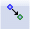) isn't highlighted, click on it to activate it.
Then, click on the Snap guides icon () to activate its functioning.
Click on the logo with the Select tool () and drag the logo to the upper left-hand
corner of the artboard where it fits into the small square defined by four guide lines. Logo moved to upper left-hand corner.
The upper part of the page should appear similar to the figure below.
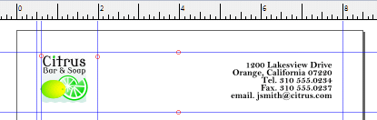
Upper part of page showing ruler.
Next you'll copy the background object in the logo and scale the new object by dragging
its bounding box to fit the background of the letterhead.
With the logo still selected, choose Object > Ungroup to ungroup the larger
group in the logo. See how the smaller subgroups remain grouped.
If desired, use the Zoom tool () to zoom in on the logo.
Using the Select tool (), click away from the logo to deselect it, and then
click below the word Bath to select the light-blue background object in the logo.
Press <Ctrl>-D to duplicate the background image. All the objects in the logo
become darkened a little bit because there is now a copy of the background color, which is
actually a gradient, on top of all the objects. Now drag the copy the background to the
bottom left corner of the page, aligning it with the snap guides. You can press the arrow keys
to nudge it into place.
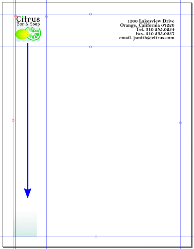
Move the background object.
Next, you'll make this background object the background for the page.
Drag the top right corner of the new object's bounding box up to the top right side
of the blue letterhead guide, to just below the return address.
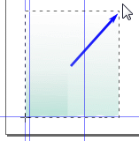
Scaling the background object to the page.
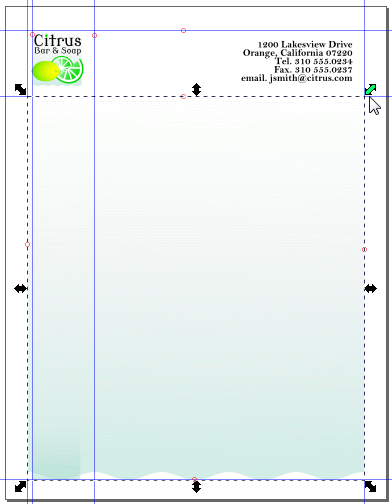
Background object scaled to the page.
With the background object still selected, choose Object > Object Properties, and click on the
Lock checkbox in the Object Properties palette to lock the object. Click away from the
background object to deselect it. Locking the background object makes it easier to select other
objects you'll add to the artwork.
You can also lock all artwork above the selected object – for example, if you want to edit
an object in the background that has objects on top of it — or all objects on other layers.
In addition, you can use the Layers palette to lock objects. Once objects are locked, they
cannot be selected or edited. You can quickly lock multiple objects, groups of objects,
and sublayers by locking the parent layer.
The lemon in the logo is comprised of two objects grouped together. Now you'll copy and move the lemon and place it at the bottom of the letterhead.
Click on the collection of citrus fruits in the lower part of the logo and choose Object < Ungroup to separate them into three distinct objects. Select the lemon in the logo, press <Ctrl>-D to copy it, and move the new lemon to the bottom right corner of the letterhead guide.
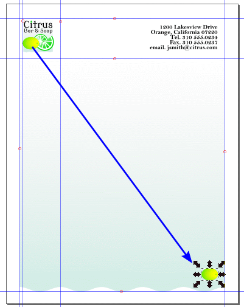
Move the copy of the lemon to the lower right corner of the page.
You'll use the Scale tool to resize the new lemon.
Select the copy of the lemon if it isn't selected already.
Click on the Scale tab in the Transform palette, set the unit of measurement to
percent (%), set the width to 300 (300 percent), and click on the Scale proportionally
checkbox to maintain the aspect ratio of width to height.
Click the Apply button.
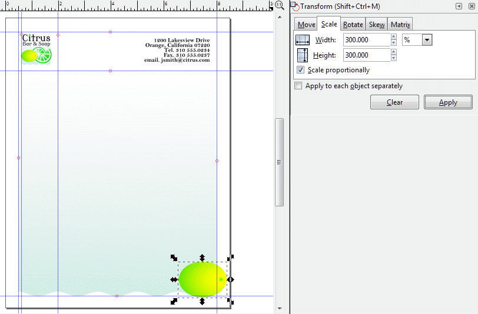
Magnify the image of the lemon 300 percent.
Move the lemon so it clears the side and bottom of the page by about half an inch.
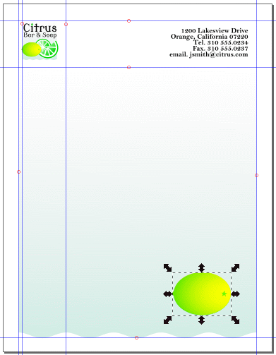
Relocating the lemon image.
Rotating Objects
Objects are rotated by turning them around a designed point of rotation. You can rotate objects
by clicking on them twice, first to display their bounding boxes and handles to allow resizing, and
second to display handles to allow rotation and shearing. When the center of rotation appears after
the second click, you can rotate the object about that point. You can also drag that center of rotation
to any other location you want where it will still act as a center about which your object will
rotate.
You can rotate objects using the Transform palette to set a point of origin and a rotation angle. You can also rotate objects using the Rotate palette to set its rotation angle. In the examples below, the middle figure
shows a lemon object rotated about its default center of rotation. In the third example, the center of
rotation has been dragged outside the lemon and a rotation of 30 degrees applied using the Rotate
palette in the Transform palette.
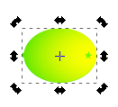
Original lemon object showing rotation and shear handles.
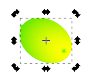
Original lemon object rotated about default center of rotation.
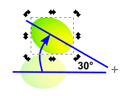
Original lemon object rotated about external
center of rotation.
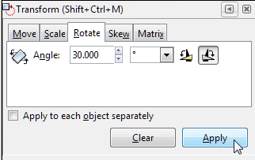
Rotate palette, 30°, clockwise direction icon selected.
You'll rotate the lemon 30° anticlockwise around its center point using the Rotate palette.
With the lemon selected, click on the Rotate tab to bring up the Rotate palette.
Type 30 in the Angle: text field, select the Rotate anticlockwise icon,
and click on the Apply button.
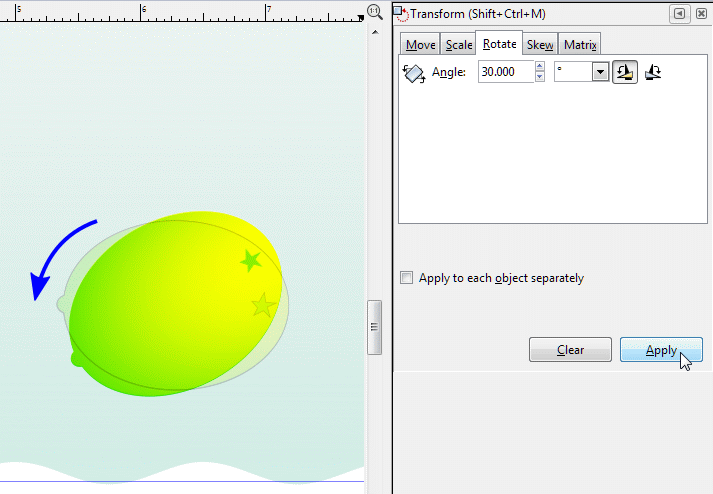
Rotate lemon 30° anticlockwiseclockwise.
Click away from the lemon object to deselect it. Your page will appear similar
to the figure below.
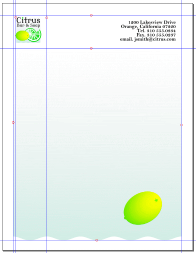
Full page image so far.
Choose File > Save.
Now you'll create a flower. You will first create the sepals by distorting the edges of a star. You
will then create the petals by rotating copies of an ellipse, converting them into paths, and then
merging them into one object using the Union option for paths.
Select the Star tool ()
in the toolbox, type 5 into the Corners text box to make a five-pointed star, leave the
other settings at their default values, and position the pointer in the artwork next to the lemon.
Drag the tool to draw a five-pointed star that's about the same size as the lemon.
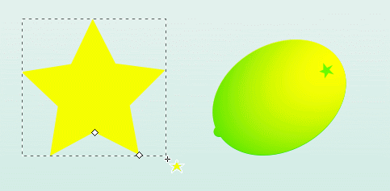
Make a five-pointed star.
The star is painted with the paint attributes of the last selected object (in this case,
the lemon).
With the star still selected, click on the Lime Green swatch in the Color palette. Leave the
stroke set to None.
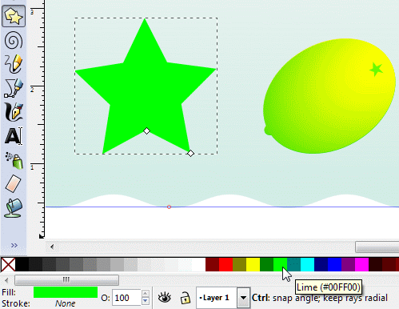
Change the star's fill color to lime green.
Now you'll distort the star by converting it from an object into a series of paths that you
can manipulate individually.
Choose Path > Object to path.
Select the Edit nodes tool (). Note how the star shape changes to
show individual paths and nodes.
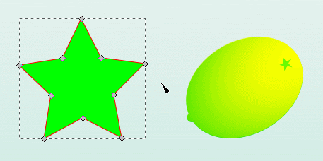
Star converted into a series of nodes and paths.
Select each side of the star and drag the middle to the right a little bit to produce
a twirl effect. When you're done, choose Edit > Deselect to deselect the distorted star.
You have created the flower sepals, which are the backmost part of the flower.
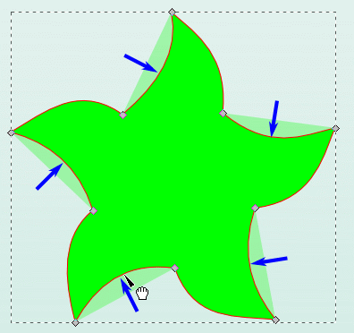
Curving the sides of the star with the Edit nodes tool.
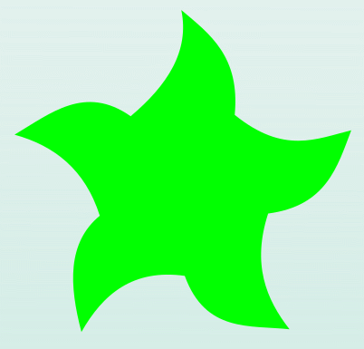
Result of distorting star object.
Now you'll make the flower petals. You'll create a white ellipse, move its center of rotation to
one end, and use a combination of <Ctrl>-D to duplicate the ellipse and the Rotate
palette to create the remaining four petals to create a five-petaled flower. You'll then
convert the five ellipses into paths and then use the path Union option to merge them
into one object.
Make an ellipse and color it white.
With the ellipse still selected, choose Path > Object to Path. Click on the ellipse again
to bring up the rotate and shear handles. The center of rotation should (of course) appear in
the center of ellipse. Drag the center of rotation to one end of the ellipse.
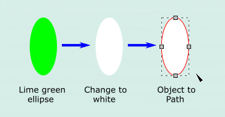
Change color of ellipse from lime green to white.
Then convert it into a path.
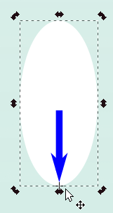
Drag the center of rotation of the ellipse to one end.
With the ellipse still selected, bring up the Rotate palette in the Transform
palette. Type 72 in the Angle: text field (An angle of 72° represents
one-fifth of a full 360° rotation). It doesn't matter which direction of
rotation you choose.
Press <Ctrl>-D to make a copy of the ellipse and click the Apply button in
the Rotate palette. The copy of the petal is now rotated 72 degrees about its end.
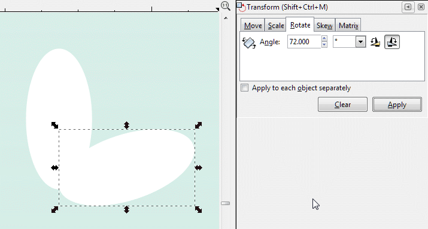
Second flower petal created.
With the second petal still selected, press <Ctrl>-D to make a copy of that petal and
click on the Apply button in the Rotate palette to rotate the newly copied petal.
Repeat these steps two more times to create the remaining two petals.
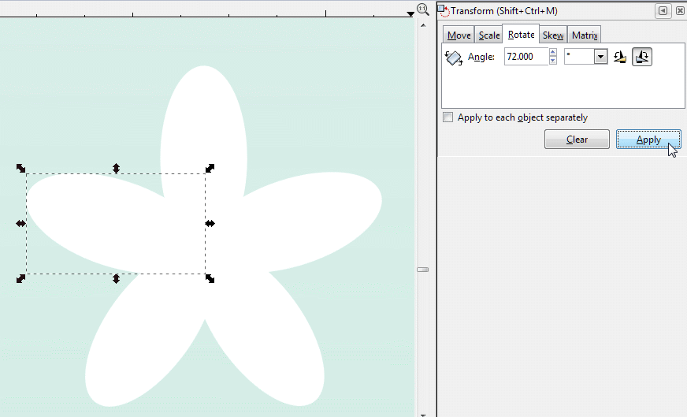
Five petals created.
Now shift-click all the unselected petals, or marquee-select them to group them. Choose
Path > Union to merge all the individual ellipse paths into one path.
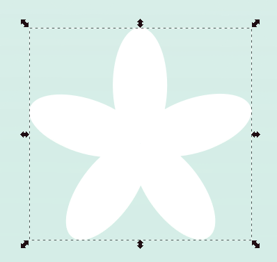
Five petals merged into one object.
Move, magnify, and rotate the flower petal object on top of the lime-green sepal object.
Enlarge the petal object so it is approximately the same size as the sepal object and rotate
it so the petals are situated between the sepals.
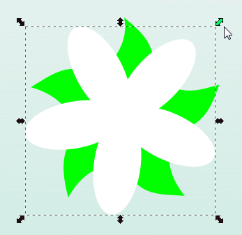
The petal object on top of the sepal object.
Now you'll complete the body of the flower by adding an orange center. Using the Circle
tool in the toolbox, create an ellipse about the same size and shape as a single petal. Move to the
center of the flower.
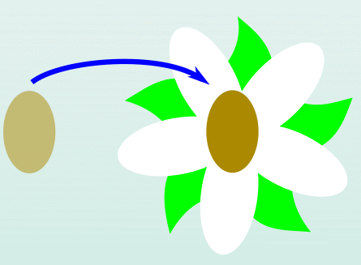
Completing the flower
Shearing Objects
You will now shear the flower. Shearing an object slants, or skews, the sides of the object
along the axis you specify, keeping opposite sides parallel and making the object nonsymmetrical.
Marquee select the whole flower and choose Object > Group to group them into one object.
Click on the Skew tab in the Transform palette. Enter -10 in the
Horizontal: text field, leave the Vertical: text field at 0, and select
° (degrees) in the unit of measurement field. Click on the Apply button.
The flower now appears to have been turned a little to the left and up. Shearing the flower object.
The flower is about the same size as the lemon. You'll rescale it so it's smaller. Click on the
Scale tab, enter 0.75 in both the Width and Height text fields. Choose
in (inches) for the unit of measurement. Click on the Apply button. The flower now
has a more reasonable size compared to the lemon.
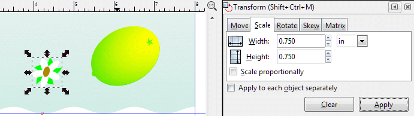
Rescaling the flower object.
Using the Select tool (), drag the flower next to the lemon in the bottom right
corner of the page. Then group the flower and lemon, and move them as a unit closer to
the lower right corner of the letterhead.
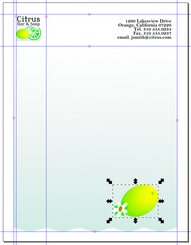
Group the flower and lemon objects.
Then convert it into a path.
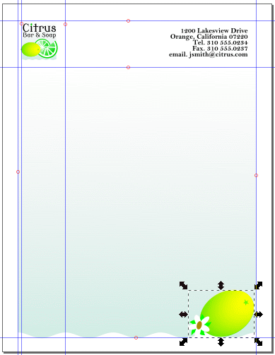
Move the flower and lemon objects.
Choose Edit > Deselect to deselect the artwork, and then choose File > Save.
You've completed the letterhead artwork. Keep the file open so that you can use its artwork later in the lesson.
Positioning Objects Precisely
You can use guide lines with snapping capabilities and the Transform palette to move objects to exact
coordinates on the x and y axes of the page and to control the position of objects in relation to a trim edge.
For this portion of the tutorial, you will create a new svg file that will contain artwork for
an envelope. This artwork will be a modified version of the letterhead logo you just finished.
Choose File > New.
A new Inkscape window appears with a blank artboard.
Choose File > Save As...
Using the dialog window, navigate to the Tutorial07 folder and save the file as envelope.svg.
Choose File > Document Properties.
Select Page Size: US #10 Envelope 4.1 × 9.5 in. and uncheck the checkbox for
Border: Show border shadow. The artboard drop shadow might be a distraction whereas
a simple border might define your working area more clearly in this case.
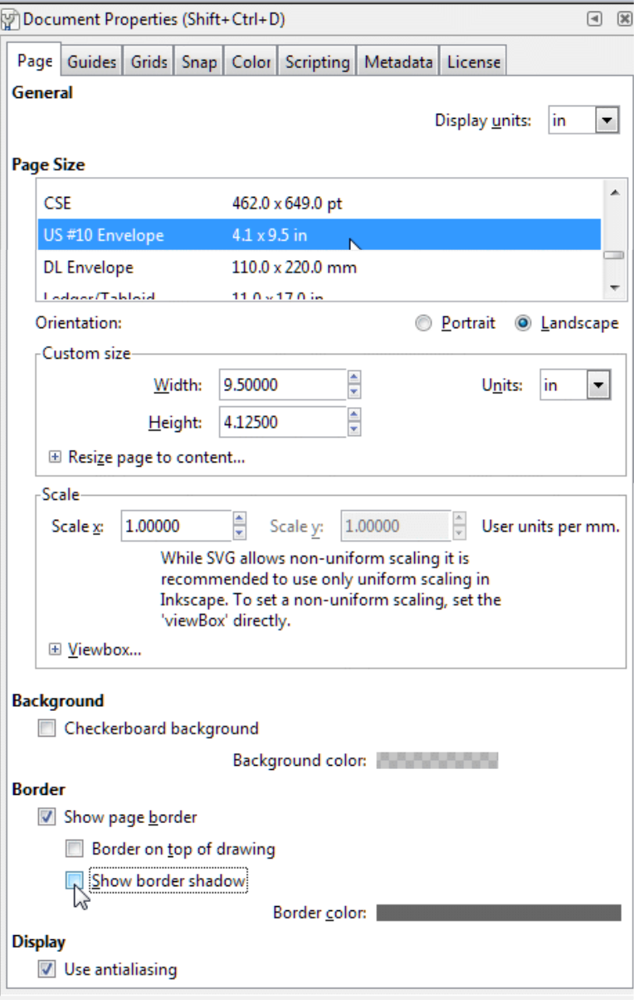
Document Properties dialog box.
X out of the Document Properties palette.
Click on the Zoom to fit page in window (5) icon in the Commands Bar.
Choose Extensions > Render > Layout > Printing marks... Click on the Marks tab
if that tab isn't already active. Check the Crop Marks checkbox if it isn't already checked
and deselect any other checkboxes. Crop marks appear automatically at the corners of the envelope-shaped
artboard.
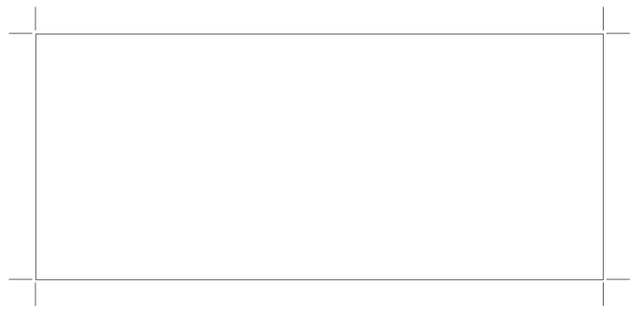
Envelope with crop marks.
Now you will make three guide lines to help in positioning the logo and address label on the
envelope. To create the top guide line, click on the ruler at the top of the work window, left-click
to create the guide line and drag it down until it is one quarter of an inch down from the top
edge of the envelope. The line should be aligned at the 4⅛-inch mark on the left vertical ruler.
The line turns blue when you release the left mouse button.
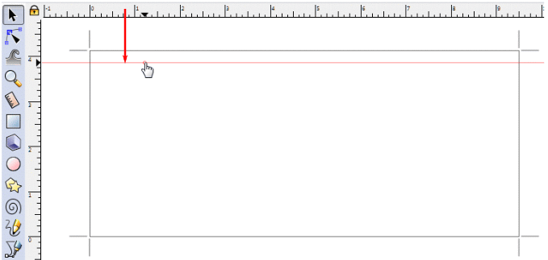
Make the top guide line.
Do the same thing to create a guide line for the bottom part of the envelope. Click on the ruler
at the top of the work window again and drag the new guide line down until it is ¼ of an inch
from the bottom edge of the envelope. It will be aligned with the ¼-inch mark on the vertical
ruler at the left side of the work window.
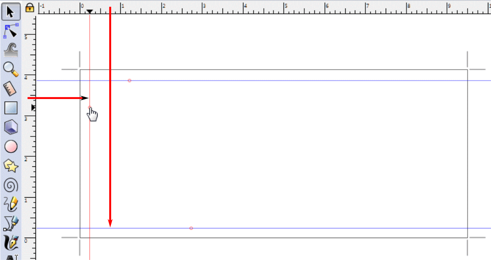
Make the remaining guide lines.
We don't need to make a guide line for the right end of the envelope. We will not be putting any
artwork there. The envelope artboard is ready to receive artwork from the letterhead file.
For more information on rulers, see Help > Inkscape Manual. In the table of contents, choose
1. Quick Start > The Anatomy of the Inkscape Window. For more on guide lines, see
5. Positioning and Transforming > Snapping > Guides.
Bring the letterhead artwork file that you were working on earlier. You can use the <Alt>-<tab>
key combination to switch to the other active Inkscape window.
Using the Select tool (), draw a marquee around the logo so that all the objects in it are selected.
Choose Edit > Copy to copy the logo to the Clipboard.
Press <Alt>-<tab> again so you can switch back to the envelope Inkscape window.
Choose Edit > Paste. You'll move the pasted logo to within ¼-inch of the top left corner of the evelope by specifying the x and y coordinates in relation to the ruler origin. The ruler origin is the point where 0 appears on each ruler. The ruler origin in this file begins at the lower left corner of the envelope, and the ruler units are in inches.
If the Snapping Toolbar isn't visible, then choose View > Show/Hide > Snap Controls Bar. Click on the
Enable snapping (%) icon () and the Snap guides icon () to make them active.
Drag the logo artwork to the upper left corner of the envelope where the guide lines intersect. A tooltip
window appears when the upper left corner of the logo image is very close to the guide line intersection, signaling
you of the image's proximity and that snapping to the corner will take place.
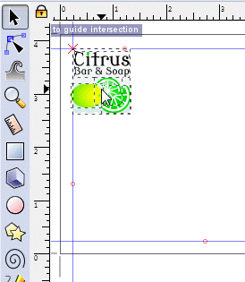
Moving the logo image to the upper left corner of the envelope.
Release the mouse key and the logo image snaps into place.
Now go back to the letterhead artwork using <Alt>-<Tab>, marquee select the top two lines of the
address and copy the block to the Clipboard using Edit > Copy.
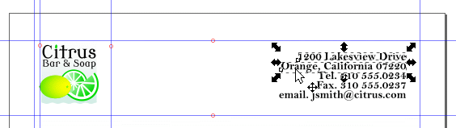
Select the address (top two lines only).
Return to the envelope artwork (<Alt>-<Tab>) again and use
Edit > Paste to paste the address onto the artboard.
Choose Object > Transform.
Select in for unit of measurement if it isn't selected already, set both the Horizontal
and Vertical placement to 0.25 so the lower left corner of the address block will be placed
where the left-hand and bottom guide lines intersection. Uncheck the Relative move checkbox. You
will move the lower left corner of the logo block to the absolute coordinates x = 0.25 inches,
y = 0.25 inches, as you will see when you check where the guide lines intersect the left and top rulers.
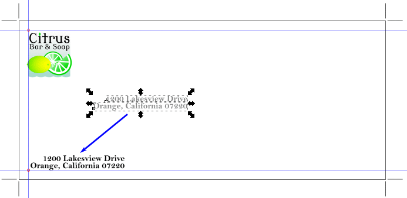
Positioning the address block using the Transform function.
The two lines of address text need to be aligned. You will use the Align and Distribute function to
left-justify them.
With the address block still selected (reselect it, otherwise), choose Object > Align and Distribute.
Click on the Align baseline anchors of texts horizontally icon. The two lines of address text line up
against the left guide line.
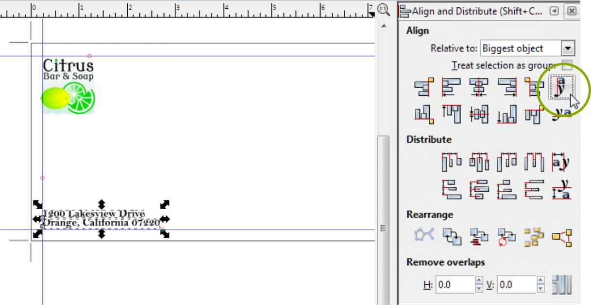
Left-justifying the address block using the Align and Distribute function.
The Align and Distribute function is a very powerful feature of Inkscape that allows you to arrange
text and art objects with great precision. To find out more about it, see Help > Inkscape manual >
5. Positioning and Transforming > Alignment and Distribution of Objects.
Click away from the artwork to deselect it, and then choose File > Save.
Reflecting Objects
You can make mirror reflections of objects by flipping them across an invisible vertical or horizontal mirror.
There are two reflect functions available when the Select tool () is active. They are located in the Commands Bar.
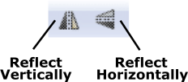
Reflection Icons.
Now you'll use the Vertical Reflect tool (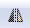) to make a mirror image of the
orange slice in the logo.
Use the Select tool () to select the orange slice in the logo.
Zoom in if necessary.
Press <Ctrl>-D to make a copy of the orange slice. You'll see the image flicker a little
bit as the copy is made and placed directly on top of the original orange slice.
With the duplicated orange slice still selected, click on the Vertical Reflect tool
()
to make a mirror image of the object. Drag it off to the side where you will continue to manipulate it.
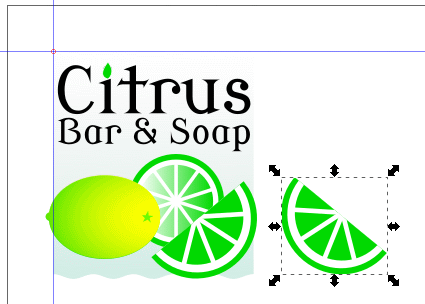
Copying, Reflecting, and Moving the Orange Slice.
With the reflected orange slice still selected, move it down below the logo, <Ctrl>-dragging it
to constrain the move vertically downward. Then <Ctrl>-drag a handle on the bounding box to enlarge
the orange slice (as shown in the illustration below).
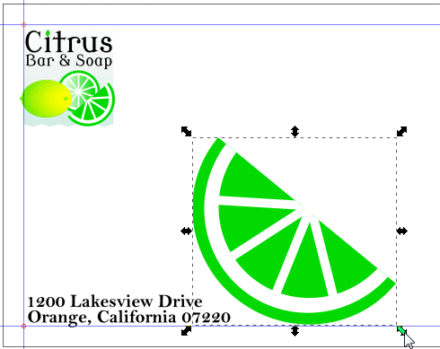
Enlarge the Orange Slice.
Changing the Perspective
Now you'll use the Perspective tool to change the perspective of the orange slice.
Make a trapezoid. It will be the perspective envelope that distorts the orange slice object.
Making an envelope that the Perspective function can use is an idiosyncratic task. Use the Line tool
() or the Bezier
Pen tool ()
to draw the shape.
To check if the lower left corner is the first made corner, click on the trapezoid with the Edit Nodes tool
().
Then, press <Tab>. If the first corner is highlighted, then the envelope box is correctly oriented.
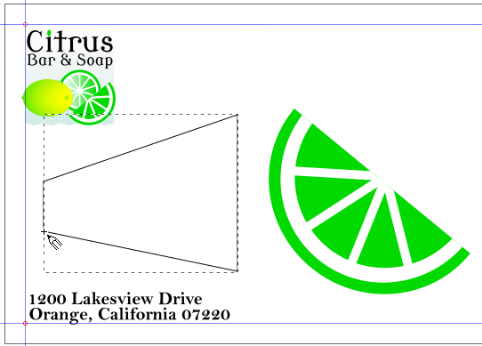
Draw the template trapezoid.
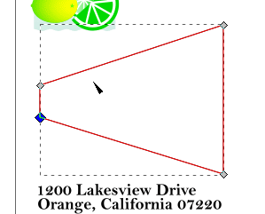
Testing for Corner No. 1 at lower left corner of trapezoid.
The first corner is highlighted.
Select the orange slice image, then <Shift>-select the trapezoid to group-select it.
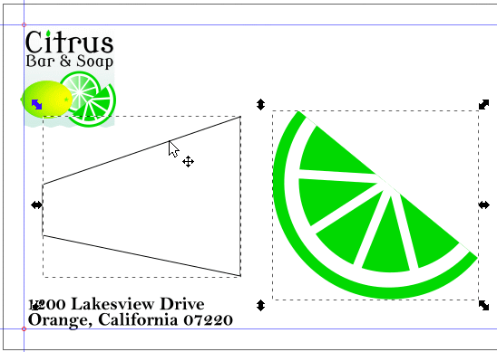
Select the object to transform and the trapezoid transform shape.
With the trapezoid and orange slice selected, choose Extensions > Modify Path > Perspective.
The Perspective function takes a number of seconds to do its number-crunching. The original shape disappears
and then reappears as a distortion of itself in the trapezoid.
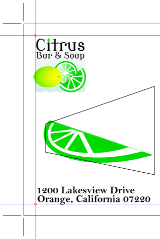
Distorted Orange Slice.
Click on the trapezoid with the Select tool () and press the <Delete> key to delete it.
Click on the distorted orange slice with the Select tool and fine-adjust its shape and position as
you desire. You can resize it, shear it, and rotate it to suite your taste in the design.
Fine-tuning the shape of the Orange Slice.
Choose Edit > Deselect. Finished Envelope.
Choose File > Save. You can either minimize the file and leave it open on your desktop,
or close the file. You'll use it later in this tutorial.
You can find out more about how the Perspective tool works by choosing Help > Inkscape Manual >
22. Extensions > Modify Path > Perspective.
Further Using the Perspective Tool
The Perspective tool is a multipurpose tool that, besides letting you change the perspective of an object,
combines the functions of scaling, shearing, reflecting, and rotating.
Now you'll use the Perspective tool to transform objects that you copy from the logo into a business card.
Choose File > Open, and open the Tutorial07BusinessCard.svg file in the Tutorial07 folder. Tutorial07BusinessCard file contents.
You will finish the business card design and then make duplicates of the card to fill up the remaining spaces
on the artboard.
Choose File > Save As, name the file Buscards.svg, select the Lesson07 folder, and click Save.
Click on the Zoom tool () in the toolbox and draw a marquee around the image in the upper left corner of the artboard to
magnify it. Magnify the card image.
Choose the Select tool (), and click to select the logo.
The logo is a grouped image. You will ungroup it to isolate the image of the full lime slice in the background,
copy it, and distort the copy. Select the logo.
Use the hot key combination <Shift>-<Ctrl>-G to ungroup the first of
several groups of logo images. Ungroup the first level of groups.
Note how the upper text and lower fruit images are in their own separate groups. Dashed bounding boxes define
their borders.
Click off the logo to deselect the groups and then click on the fruit image to select it. Select the grouped fruit image.
The fruit image is a group of three individual fruit images. Press <Shift>-<Ctrl>-G
to ungroup them. Ungroup the three individual fruit images.
Click off the image to deselect it and then click on the background lime slice in the logo to select it. Select the background lime slice.
Press <Ctrl>-D to make a copy of the object. Note how the copy appears topmost over the over fruit objects. Make a copy of the lime slice.
Position the new lime slice below and slightly to the right of the logo. Move the copy of the lime slice down and to the right.
Now you'll use the <Ctrl> and <Shift> keys in combination with the Select tool to scale the
new lime slice. Note that using the <Ctrl> and <Shift> keys together with the Select tool
allows you to resize an object from the center of its bounding box and maintain its aspect. Resize the lime slice.
With the lime slice still selected, hold down both the <Ctrl> and <Shift> keys
and drag the bottom right corner handle down to scale the object from its center and make the lime slice bigger.
You will now distort the lime slice using the Perspective tool.
You need to prepare the lime slice object for the Perspective function before you apply it. You will ungroup
the component parts of the image, eliminate the color gradient (the Perspective tool does not work with gradients
at this point in time, only solid colors), convert the individual objects into paths, and then distort.
With the lime slice image still selected (reselect it if it is deselected), use the <Ctrl>-<Shift>-G
hot key combination to ungroup the component parts that make up the slice. Ungroup the lime slice.
Select one of the lime sections in the image. Bring up the Color palette, click on the Fill tab if it isn't
active already, and click on the Flat color icon. The gradient is now a solid color. The Perspective function
can work with the image more effectively now. Eliminate the gradient.
You will now make a shape consisting of the rib "spokes" and the white inner circle. Start by selecting only
the individual ribs using <Shift>-Select tool and color them red. Red is a good color to work with here
because the spokes can get lost against any white background. Red prevents that from happening. <Shift>-select the ribs and color them red.
Draw a red circle that completely covers the inner white circle and ribs. Draw a red circle.
Set the circle's stroke to 4 pixels and the fill to None. Turn the circle into a red wheel rim.
<Shift>-select the red circumference and the red ribs. You will now convert them into paths. Select image ribs and circumference.
With the red components selected, click on the Edit nodes tool () so you can see how the conversion process
works. Choose Path > Object to Path and then choose Path > Stroke to Path. You can see individual nodes
when the Edit nodes tool is active. Convert objects and strokes to paths.
You will now convert the individual rib and circumference paths into one path using the Union function.
With the paths still selected, choose Path > Union. The individual paths combine into one path, something
that the Perspective function can work with more effectively. Apply the path union function.
The outer lime-colored circle has a lime-colored stroke and a white fill. Change the white fill to lime so
the background circle has just one color. Change the white circle fill to lime green.
Select the combined red spoke-and-red figure and change its fill color to white. Change the red ribs and circumference to white.
Because the image originally had a gradient in its make-up, there might be a remnant figure
left behind when you replaced the gradient with a solid color. An artefact like this can produce
unexpected and undesired side-effects in the distortion process. To find out, choose View >
Display mode > Outline. If you see a figure like the one below, select the inner spurious circle
while you're still in Outline mode and press the <Delete> button on the keyboard. Spurious circle left from original gradient function.Spurious circle removed.
Choose View > Normal to return to normal view. Draw a bounding box around the lime slice object and
choose Path > Object to Path convert the box into a path. Here, the bounding box is colored lime green,
which was the last color used from the Color palette. Group the converted box (now a path) and the
lime slice object using the <Ctrl>-G hot key combination. Group the lime image and the bounding box.
If you haven't done so already, draw a distortion bounding box starting from the lower left corner of
the box shape. You can use the Line tool () or the Bezier Pen tool (). If you use the the Rectangle tool, you'll need
to rotate the rectangle or square anticlockwise by 90° so the initial corner (consider it as Corner #1)
is the bottom left corner. Test to see if this is the case by choosing the Edit nodes tool () while the box is
still highlighted and pressing the <Tab> key. If the lower left corner is highlighted, then the
distortion box is oriented correctly. Draw the trapezoid distortion box and test for correct orientation.
At long last, you will distort the slice of lime. Select the lime slice plus box (it is grouped now, so it
is all one object) and <Shift>-select the trapezoid. Choose Extensions > Modify Path > Perspective.
The Perspective function will chug away for several seconds and the 'Perspective working' diagnostic box will
flicker as the program performs geometrical calculations behind the scenes. Diagnostic box for Perspective function.
Then, the lime figure will disappear and reappear inside the trapezoid distortion box. Result of distorting original shape.
You will now fine-tune the shape. Start by moving the lime shape out of the bounding trapezoid.
Select the lime shape with the Select tool () and then choosing Object > Ungroup. Select the resulting shape, move it out of the trapezoid, and ungroup it.
Click on the Edit nodes tool (). Nodes that define all the various paths appear. Click on the Edit nodes tool. Nodes are now visible for editing.
Click on the leftmost node on the lime skin and move it further to the left until it touches the
left edge of the bounding trapezoid. Extend the left end of the lime shape
using the Edit nodes tool.
Click on the Select tool (), then click on the bounding trapezoid box. Press the <Delete> key to delete the box. Delete the bounding trapezoid.
With the lime image still selected, choose Object > Transform > Rotate. Type 70 into the text
field and click on the Rotate Anticlockwise icon (). Rotate the figure anticlockwise.
With the lime figure still selected, bring up the Color palette, click on the Fill tab, and change the
transparency to 25 percent. Then move the figure onto the logo. You can still fine-tune the shape of the lime slice
as you see fit. Move the transformed lime slice into the logo.
Move the lime slice to the bottom of the logo image stack by clicking on the Lower Selection to Bottom icon
() in the Command bar. Move the transformed lime slice to the bottom level.
Click away from the logo to deselect it and choose File > Save. Finished card.
Making Multiple Transformations
Now you'll create multiple copies of the business card in a few easy steps.
Click on the Zoom tool () and press the 5 key to fit the artboard in the work window. Current artboard.
Choose Edit > Select All to select all the objects on the business card.
Select all objects on the artboard.
Press <Ctrl>-D to make a duplicate of the card figure.
Choose Object > Transform. Click on the Move tab in the Transform palette.
The Move option in the Transform palette lets you move objects in a specified direction either
relative to a selected object or in an absolute direction relative to the origin specified by the
horizontal and vertical rulers. Now you'll move the duplicate of the selected objects down 2 inches from the
original objects.
Type -2 in the Vertical: text field. A negative number means that you are moving an object either
down or to the left, as if they were on a number line. Make sure that the Relative move checkbox is checked
and that the unit of measurement is in. Click on the Apply button. Move the duplicated card down 2 inches.
Press <Ctrl>-D to duplicate the card you just moved. It is still selected so the copy function will
work on it. Click on the Apply button. Make and move a second duplicate card.
Deselect the card figure by click away from it. Now group select the lower two card figures, press <Ctrl>-D to duplicate them, and type -4 in the Vertical: text field. Select the lower two cards.
Click on the Apply button to move the duplicate card pair down 4 inches. Duplicate and move the selected two cards.
The first column of card images is completed. You can duplicate the entire column and fill in the
second column with the copy.
Click off the images to deselect them. Then marquee-select all the card objects in
the column you just created. Marquee-select the column of cards.
In the Move palette, change the Horizontal: entry to 3.5 (3½ inches)
and the Vertical: entry to 0. Click on Apply. The second column is instantly
populated. Make the second column of cards.
Click off the artwork to deselect the second column. Deselect the second column.
Choose View > Guides. The Guides option is checked. You uncheck it when you click on it. Hide the guide lines.
Choose File > Save to save your artwork.
Review Questions
How do you resize an object?
What transformations can you make using the Transform palette?
How do you copy an object from one Inkscape file to another?
How can you change perspective or distort an object?
Review Answers
There are two ways you can resize an object:
You can select an object with the Select tool () and drag a directional handle. To rescale
an object proportionately as you change its size, hold down the <Ctrl> key as you drag the
directional handle.
You can resize an object using the Scale option in the Transform palette. You can
enter its exact height, width, unit of measurement (inch, percent, millimeter, centimeter, pixel,
pica), and resize individual objects separately. The object is resized relative to the center of its
bounding box.
The Transform palette allows you to make the following transformations:
Move: by moving or strategically placing objects in your artwork
(by specifying the x and y coordinates and the point of origin).
Scale: by specifying the width and height of selected objects, and whether
proportionally or not.
Rotate: by specifying the angle of rotation clockwise or anticlockwise.
Skew: by specifying the amount of vertical and/or horizontal shear in a unit of
measurement of your choice.
Matrix: by editing the entries in a transformation matrix that controls the
amount of translation, scaling, rotation, and skewing, all in one operation.
You can copy an Inkscape object by:
selecting it in the source file with the Select tool ), and then choosing Edit > Copy
or pressing the hot key combination <Ctrl>-C (C for Copy) to make a duplicate,
making the destination file active by bring up its Inkscape window, and
choosing Edit > Paste or pressing the hot key combination <Ctrl>-V to paste the
object into its new home.
You can change the perspective of or distort an object by:
Converting all objects into paths using the Path > Object to Path function and converting
all strokes to paths using the Path > Stroke to Path function.
Drawing a 4-sided distortion envelope (a quadrilateral) using the Line tool
(), the
Bezier pen tool (), or the Rectangle tool (). The first node must be the lower left corner of the quadrilateral.
Selecting both the object or objects to be transformed, and then selecting the distortion
envelope, and finally
 ) to reduce the view of the finished artwork, adjust the window size, and leave it on your screen
as you work. (Use the mouse wheel with and without pressing the <Shift> key to move the artwork where
you want it in the window.) If you don't want to leave the image open, choose File > Close.
) to reduce the view of the finished artwork, adjust the window size, and leave it on your screen
as you work. (Use the mouse wheel with and without pressing the <Shift> key to move the artwork where
you want it in the window.) If you don't want to leave the image open, choose File > Close.{kind=link}
{kind=link}
 ) in the toolbox, click the logo to select the group of objects (type, background, lemon, orange slice, lime slice) that make up the logo.
) in the toolbox, click the logo to select the group of objects (type, background, lemon, orange slice, lime slice) that make up the logo.

 )
in the toolbox, type 5 into the Corners text box to make a five-pointed star, leave the
other settings at their default values, and position the pointer in the artwork next to the lemon.
Drag the tool to draw a five-pointed star that's about the same size as the lemon.
)
in the toolbox, type 5 into the Corners text box to make a five-pointed star, leave the
other settings at their default values, and position the pointer in the artwork next to the lemon.
Drag the tool to draw a five-pointed star that's about the same size as the lemon. ). Note how the star shape changes to
show individual paths and nodes.
). Note how the star shape changes to
show individual paths and nodes.

{kind=link}